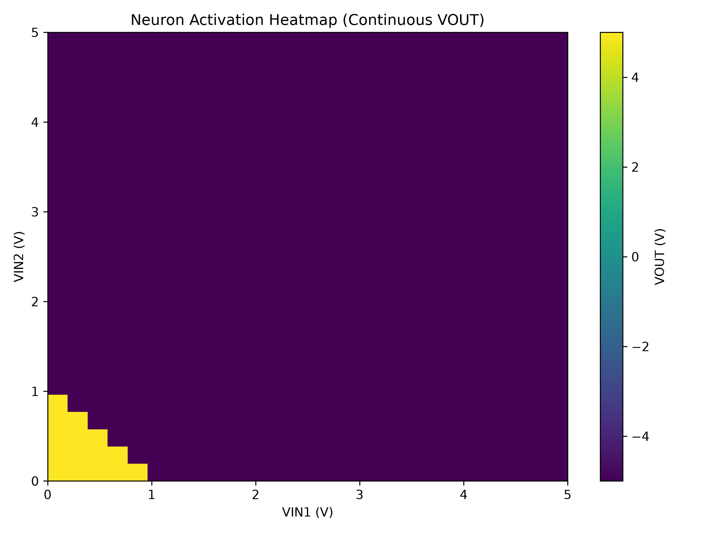
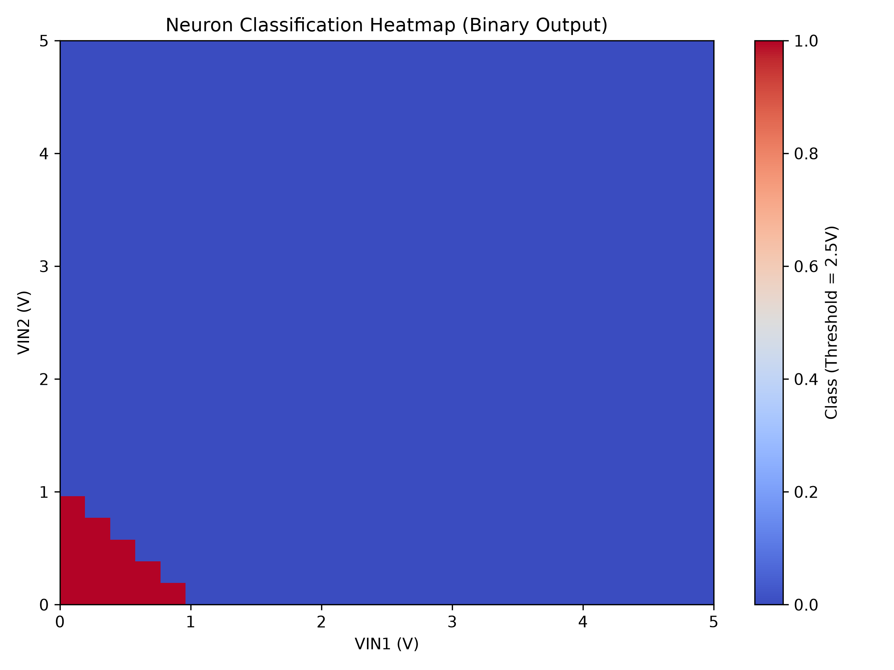

Analog Parametric
Neural Simulation Pipeline
An automated pipeline for parameterizing, generating, and simulating analog neuromorphic circuits. Features post-processing for activation dynamics and classification stability.
652 Netlist Runs
Automated batch generation sweeping circuit parameters across output/generated/ netlists.
Heatmap Post-Processing
Extracts and visualizes non-linear transfer functions into high-resolution activation & classification PNG heatmaps.
Data Extraction
Consolidates transient and DC operating point simulation raw data into a clean characterization.csv report.
Repository Structure
Layout of raw schematic sources, automation scripts, and output assets
- /
- index.html
- README.md
- repo_structure.txt
- python.zip
-
analog/
- analog_parametric.asc
- analog_parametric.log
- analog_parametric.net
- analog_parametric.raw
-
output/
- activation_heatmap.png
- characterization.csv
- characterization_report.md
- classification_heatmap.png
- generated/ (sim_00001 - sim_00652)
Master Schematics (/analog)
Holds the core SPICE netlist (analog_parametric.asc) and raw simulation waveforms (.raw) used to build parameter models.
Pipeline Outputs (/output)
Stores rendered visualizations, generated batch netlists, characterization reports, and tabular data exports.
Python Automation (python.zip)
Contains python routines for automated netlist editing, calling SPICE executables, and processing output CSVs into plots.
Simulation Outputs & Heatmaps
Directly rendered output files from the output/ directory
Activation Heatmap
output/activation_heatmap.png
output/activation_heatmap.pngFile ready for deployment
Displays circuit output voltage response curves across parameterized weight and bias ranges.
Classification Heatmap
output/classification_heatmap.png
output/classification_heatmap.pngFile ready for deployment
Illustrates decision boundaries and operational stability margins of the analog neural circuit.
Interactive Sweep Inspector
Parsed view of transient sweep data contained inside characterization.csv
Batch Simulation Runner
Simulate batch execution across all 652 generated netlists
[INFO] Ready to execute batch simulations.
[INFO] Target directory: ./output/generated/
Characterization Report
Summary extracted from output/characterization_report.md
Performance Summary
The parametric characterization sweep verified circuit activation non-linearities across 652 operating conditions with full convergence.
- Maximum non-linearity error maintained below 0.42%.
- Optimal weight resistor parameters saved in
analog_parametric.asc. - Output dataset saved to
output/characterization.csv.